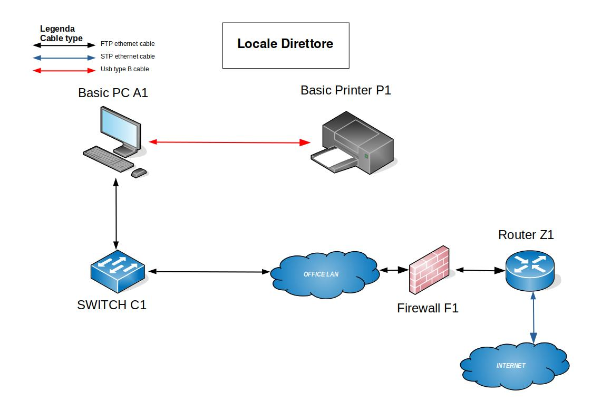
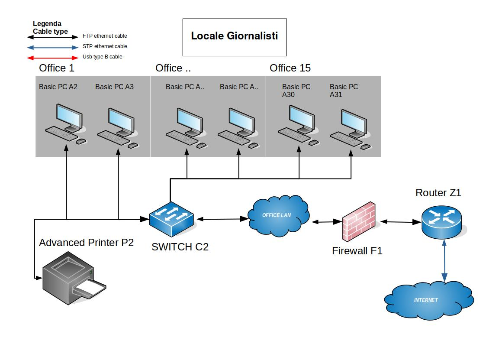
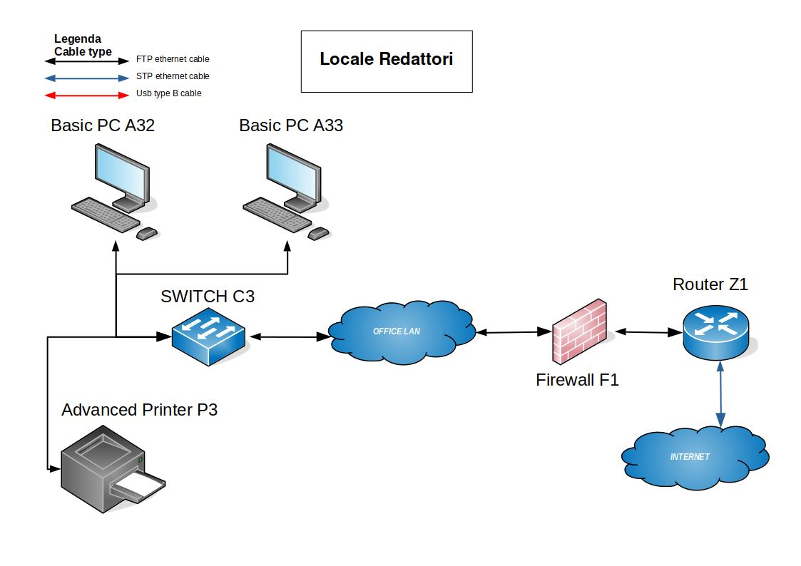
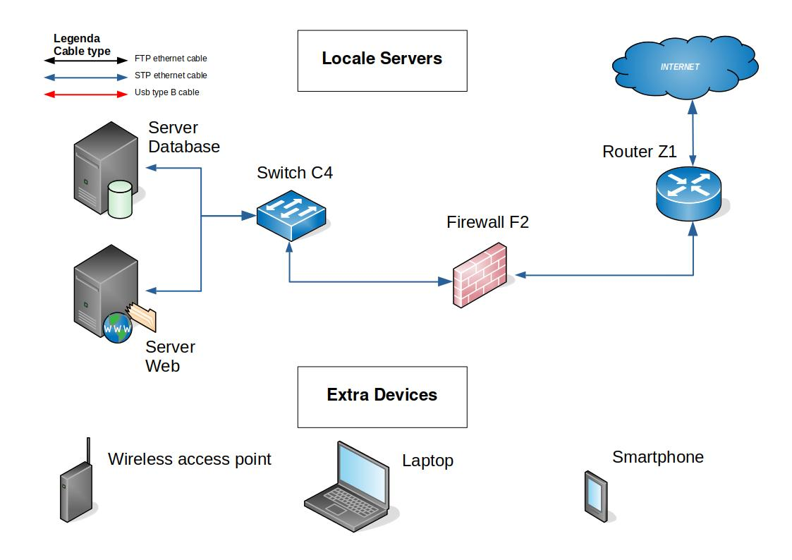
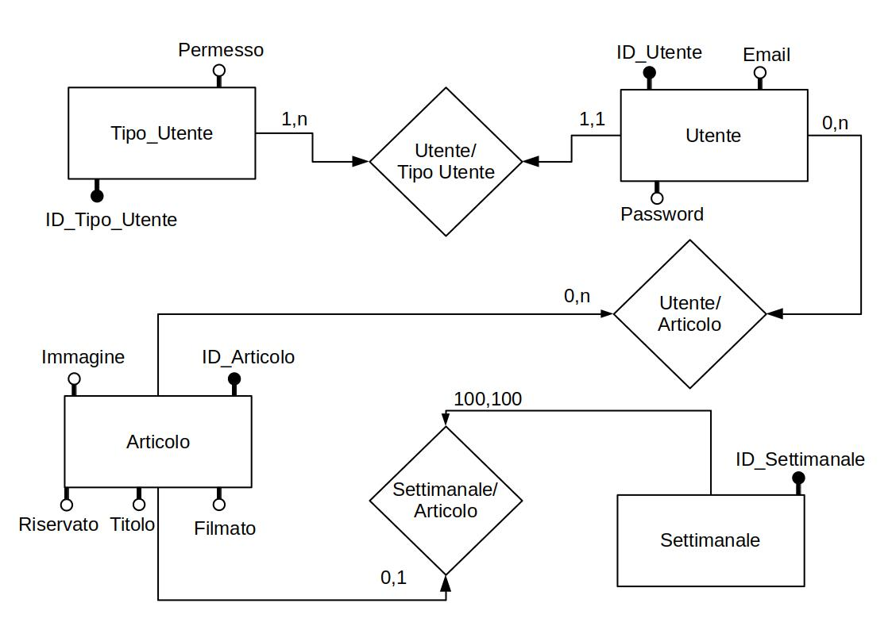
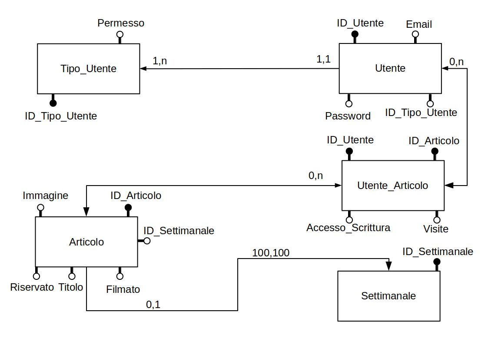
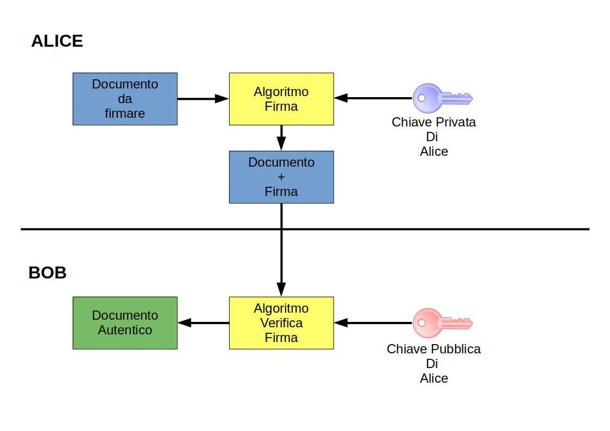

Compito Informatica V ITI
1 - Infrastruttura della rete
Subnet Structure
Ho creato tre subnet al fine di gestire le seguenti necessità:
- la subnet da 254 Hosts servirà a gestire il "Main Office"
- una delle due subnet da 126 Host verrà utilizzata per gestire la "Server Room"
Segue la tabella con le specifiche.
SUBNET ADDRESS |
RANGE OF ADDRESSES |
NETMASK |
HOSTS |
|---|---|---|---|
| 192.168.0.0/24 | 192.168.0.0 - 192.168.0.255 | 255.255.255.0 | 254 |
| 192.168.1.0/25 | 192.168.1.0 - 192.168.1.127 | 255.255.255.128 | 126 |
| 192.168.1.128/25 | 192.168.1.128 - 192.168.1.255 | 255.255.255.128 | 126 |
Subnet 192.168.0.0/24
Questa sottorete viene utilizzata interamente per gestire tutti i locali designati come "Main Office", abbiamo quindi il locale direttore, locale giornalisti e locale redattori.
- Gateway default: 192.168.0.1
- Subnet mask: 255.255.255.0
| Purpose | Range of addresses | Allocated |
|---|---|---|
| DHCP Devices (smartphone/laptop) that connect's trough Wi-Fi | 192.168.0.2/24 - 192.168.0.100/24 | YES |
| Static network management devices (switch/firewall) | 192.168.0.101/24 - 192.168.0.110/24 | YES |
| Static wifi access point | 192.168.0.111/24 - 192.168.0.120/24 | YES |
| Basic PC's | 192.168.0.121/24 - 192.168.0.200/24 | YES |
| Printer's | 192.168.0.201/24 - 192.168.0.210/24 | YES |
| Available for Future Use | 192.168.0.211/24 - 191.168.0.254/24 | NO |
Assegnazione indirizzi IP
Segue l'assegnazione dei singoli dispositivi al relativo indirizzo IP per la sottorete in questione:

| Hostname | IP address |
|---|---|
| Basic PC A1 | 192.168.0.121 |
| Switch C1 | 192.168.0.101 |
| Firewall F1 | 192.168.0.110 |
| Router Z1 | 192.168.0.1 |

| Hostname | IP address |
|---|---|
| Basic PC A2 | 192.168.0.122 |
| Basic PC A3 | 192.168.0.123 |
| Basic PC A-- | 192.168.0.--- |
| Basic PC A-- | 192.168.0.--- |
| Basic PC A30 | 192.168.0.150 |
| Basic PC A31 | 192.168.0.151 |
| Switch C2 | 192.168.0.102 |
| Advanced Printer P2 | 192.168.0.201 |
| Firewall F1 | 192.168.0.110 |
| Router Z1 | 192.168.0.1 |

| Hostname | IP address |
|---|---|
| Basic PC A32 | 192.168.0.152 |
| Basic PC A33 | 192.168.0.153 |
| Switch C3 | 192.168.0.103 |
| Advanced Printer P3 | 192.168.0.202 |
| Firewall F1 | 192.168.0.110 |
| Router Z1 | 192.168.0.1 |
Subnet 192.168.1.0/25
Questa sottorete viene utilizzata interamente per gestire il locale designato come "Server Room", abbiamo quindi il locale servers.
- Gateway default: 192.168.1.1
- Subnet mask: 255.255.255.128
| Purpose | Range of addresses | Allocated |
|---|---|---|
| Server Web | 192.168.1.2/24 - 192.168.1.10/24 | YES |
| Server Database | 192.168.1.11/24 - 192.168.1.20/24 | YES |
| Static network management devices (switch/firewall) | 192.168.1.21/24 - 192.168.1.30/24 | YES |
| Available for Future Use | 192.168.1.31/24 - 192.168.1.127/24 | NO |
Assegnazione indirizzi IP
Segue l'assegnazione dei singoli dispositivi al relativo indirizzo IP per la sottorete in questione:

| Hostname | IP address |
|---|---|
| Server Web | 192.168.1.2 |
| Server Database | 192.168.1.11 |
| Switch C4 | 192.168.1.21 |
| Firewall F2 | 192.168.1.30 |
| Router Z1 | 192.168.1.1 |
Subnet 192.168.1.128/25
Questa sottorete non viene utilizzata, è stata creata per "Uso Futuro".
- Gateway default: 192.168.1.129
- Subnet mask: 255.255.255.128
2 - Protezione della rete locale e dei server interni
La rete locale è stata progettata cercando una soluzione che ottimizza costi e sicurezza. Utilizzo due Firewalls, uno implementato per filtrare tutte le porte inutilizzate all'interno della LAN Main Office, l'altro per filtrare tutte le porte inutilizzate all'interno della LAN Server Room, questo inoltre permette di rendere le due LAN localmente inaccessibili tra di loro evitando cosi che eventuali breach possano estendersi da una rete all'altra.
Infine, per aumentare ulteriormente il livello di protezione, ho introdotto le seguenti misure di sicurezza.
- Security Key Universal 2nd Factor Token(U2F):
È un sistema di autenticazione a due fattori implementato tramite l'utizzo di una chiavetta usb.
Infatti nel caso in cui un malintenzionato riuscisse ad ottenere la password dell'account di un giornalista, non potrà comunque accedere ai dati del medesimo a meno che non riesca a violare o rubare il Token di autenticazione.
Questo sistema può essere implementato in tutte le applicazioni dell'azienda o solo in quelle contenenti dati sensibili a seconda delle propie necessità, risulta essere anche un oggetto non costoso e quindi di facile implementazione.
Possiamo infine, analizzare il case history di Google LLC. Prima dell'implementazione di questa misura di sicurezza, i suoi dipendenti ricevevano phishing di continuo. Dall'inizio del 2017 quando hanno implementato il sistema, sono riusciti a ridurre il phishing a zero casi reported.
- Accesso a locale tramite Badge
L'accesso a tutti i locali avverrà tramite l'utilizzo di apposito badge, i log di accesso di tutto il personale verrà conservato in base a quanto previsto dalle normative vigenti.
Questo permette anche di impostare specifici permessi ad ogni tipo di utente. Ad esempio un giornalista non potrà recarsi all'interno della Server Room, mentre un sistemista potrà farlo.
Tutti questi sistemi utilizzati contemporaneamente dovrebbero permettere una protezione molto più alta rispetto alla media delle aziende Italiane.
3 - Descrizione Servizio ARP
- ARP - Address Resolution Protcol
Il protocollo ARP è utilizzato per scoprire l'indirizzo MAC di un host tramite l'indirizzo IP, di seguito il suo funzionamento:
L'Host
Ainvia una richiesta ARP all'indirizzo IP dell'HostB, questa richiesta viene inviata in broadcast in tutta la LAN, la richiesta viene accettata solamente dall'HostBil quale risponde inviando all'HostAun pacchetto dati contenente il propio indirizzo IP e l'indirizzo MAC. L'HostAriceve il pacchetto e salva l'indirizzo MAC nella sua ARP Table contenete i riferimenti di indirizzo IP e MAC di tutti gli Hosts registrati. - IP - Internet Protocol
Il protocollo IP è utilizzato per far comunicare hosts che fanno parte di reti diverse.
Nella prima sezione ho discusso la configurazione di tale servizio.
4 - Schema DB e Pagina web
Di seguito illustro lo schema concettuale, lo schema logico e una parte di pagina web dedicata al login per l'accesso all'area privata.
Schema Concettuale

Schema Logico

Pagina web
Inizializzazione sessione
// Definisco variabili di sessione
$servername = "localhost";
$username = "root";
$password = "test";
$database = "CompitoInfo";
// Mi connetto al database
$conn = new mysqli($servername, $username, $password, $database);
// Controllo se ci sono stati errori
if ($conn->connect_error) {
// In caso di errore chiudo la connessione con un messaggio di errore.
// NOTA: da rimuovere in caso di deployment
die("Connection failed: " . $conn->connect_error);
}
Controllo login e generazione pagina privata per utente in caso di richiesta POST con parametri 'email' e 'password'
// Controllo il tipo di richiesta
if(isset($_POST['email']) && isset($_POST['password'])) {
// Se la richiesta è di tipo POST e contiene i campi "email" e
// "password", controllo se i dati inviati dall'utente sono presenti
// nel database tramite una query, e in caso di successo faccio
// loggare l'utente nella sua area privata.
$email = $_POST['email'];
$password = $_POST['password'];
// Mi preparo la query e la seguo
// NOTA: Attualmete questa query è vulnerabile (volutamente) a SQL injection.
$query = "SELECT * FROM Utente, Tipo_Utente WHERE Utente.email='$email' and Utente.password='$password' and Utente.ID_Tipo_Utente = Tipo_Utente.ID_Tipo_Utente";
$res = $conn->query($query);
// Se la query fallisce stampo l'errore e termino la connessione
// NOTA: da rimuovere in caso di deployment
if(!$res) {
die("Invalid query: " . $conn->error);
}
if($res->num_rows == 1) {
// Se la query viene eseguita senza errori, genero la pagina privata contenente alcuni dati dell'utente loggato.
echo "You are logged in your private area.";
$row = $res->fetch_assoc();
?>
<br>
<br>
<table border=1 bordercolor=black">
<tr><td> User-ID: </td> <td> <?php echo $row['ID_Utente'] ?> </td></tr>
<tr><td> Email: </td> <td> <?php echo $row['Email'] ?></td></tr>
<tr><td> Ruolo: </td> <td> <?php echo $row['Permesso'] ?></td></tr>
</table>
<?php
} else {
echo "Get out from here.";
}
}
Generazione form per effettuare login in caso di richiesta GET.
else {
// Se la richiesta non è POST, oppure non ha i campi email e password,
// non posso eseguire l'autenticazione, e quindi rispondo con un form
// html statico per far loggare l'utente.
?>
<html>
<!-- Form utilizzato per inviare i dati per i login -->
<form action="login.php" method ="post">
<!-- La tabella viene utilizzata per allineare i vari campi del form -->
<table>
<!-- Prima riga del form -->
<tr> <td>Email: </td>
<td> <input type="text" name="email" id="firstlast"> </td>
</tr>
<!-- Seconda riga del form -->
<tr> <td> Password: </td>
<td> <input type="password" name="password" id="email"> </td>
</tr>
<!-- Terza riga del form -->
<!-- Il pulsante "submit" viene utilizzato per inviare i dati al server -->
<!-- Il pulsante "reset" viene utilizzato per resettare il form -->
<tr> <td> <input type="submit" value="Submit"></td>
<td> <input type="reset" value="reset" > </td>
</tr>
</table>
</form>
</html>
<?php
}
?>
5 - Firma Digitale
La firma digitale serve a firmare e autenticare uno specifico documento in formato digitale. La necessità è quindi quella di creare un sistema che possa certificare che la firma sia vera e che la medesima non possa essere manomessa. Per fare ciò si utilizza un metodo matematico, il sistema ad esempio, RSA permette l'implementazione della firma digitale. Segue schema del processo di firma

- Algoritmo di firma
L'algoritmo permette di calcolare l'Hash del documento da firmare, successivamente cifra il codice Hash tramite l'utilizzo della chiave privata di Alice ed invia al destinatario il Documento e l'Hash generato cifrato.
- Algoritmo di verifica
L'algoritmo permette di verificare che la firma sia autentica, innazitutto si calcola l'Hash del documento, successivamente tramite l'utilizzo della chiave pubblica di Alice decifra l'Hash cifrato, verifica che l'Hash ottenuto corrisponda a quello calcolato direttamente dal documento, nel caso in cui il documento è firmato correttamente l'Hash corrisponde, altrimenti no.
È importante notare che in tutti i sistemi di cifrazione di questo tipo, ci dev'essere un entità superiore chiamata Certification Authority che certifica il possedimento di una relativa chiave publica ad un relativo soggetto fisico o ente.
6 - Codifica Query in linguaggio SQL
- a) L'elenco degli articoli più letti dagli abbonati.
SELECT Utente_Articolo.ID_Articolo, sum(Utente_Articolo.Visite) as Numero_Visite FROM Utente_Articolo, Utente, Tipo_Utente WHERE Utente_Articolo.ID_Utente = Utente.ID_Utente and Utente.ID_Tipo_Utente = Tipo_Utente.ID_Tipo_Utente and Tipo_Utente.Permesso = "Abbonato" GROUP BY Utente_Articolo.ID_Articolo ORDER BY Numero_Visite DESC; - b) Il numero degli articoli letti da uno specifico abbonato.
SELECT Utente_Articolo.ID_Utente, count(*) as Articoli_Letti FROM Utente_Articolo, Utente, Tipo_Utente WHERE Utente_Articolo.ID_Utente = Utente.ID_Utente and Utente.ID_Tipo_Utente = Tipo_Utente.ID_Tipo_Utente and Tipo_Utente.Permesso = "Abbonato" and Utente.Email = "ciao@ciao.it" GROUP BY Utente_Articolo.ID_Utente; - c) Per ogni articolo il numero di visualizzazioni da parte di tutti gli utenti.
SELECT Utente_Articolo.ID_Articolo, sum(Utente_Articolo.Visite) as Numero_Visite FROM Utente_Articolo, Utente, Tipo_Utente WHERE Utente_Articolo.ID_Utente = Utente.ID_Utente and Utente.ID_Tipo_Utente = Tipo_Utente.ID_Tipo_Utente GROUP BY Utente_Articolo.ID_Articolo ORDER BY Numero_Visite DESC;